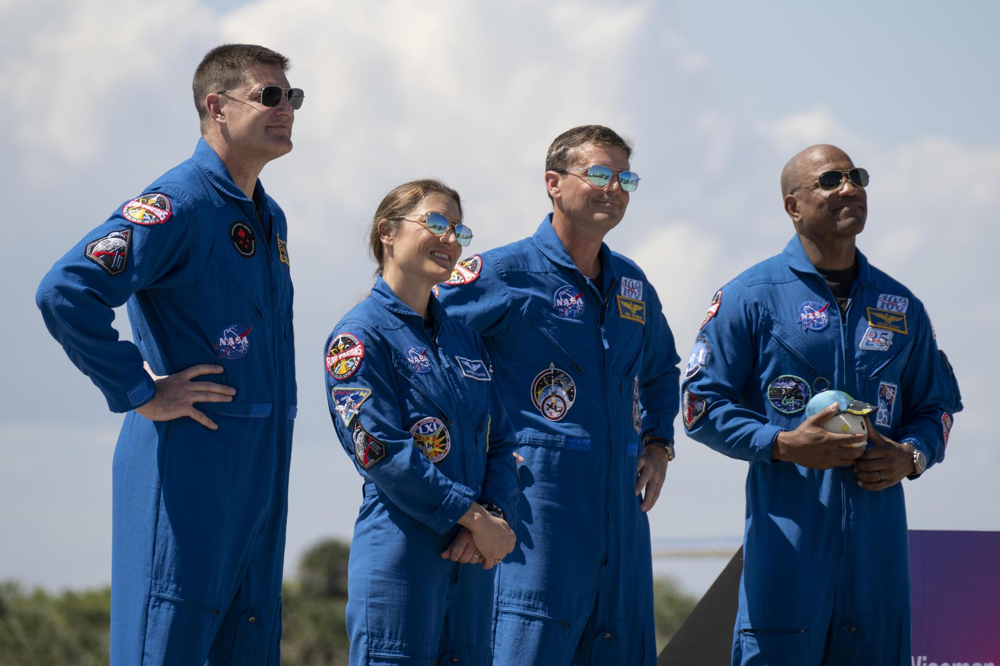
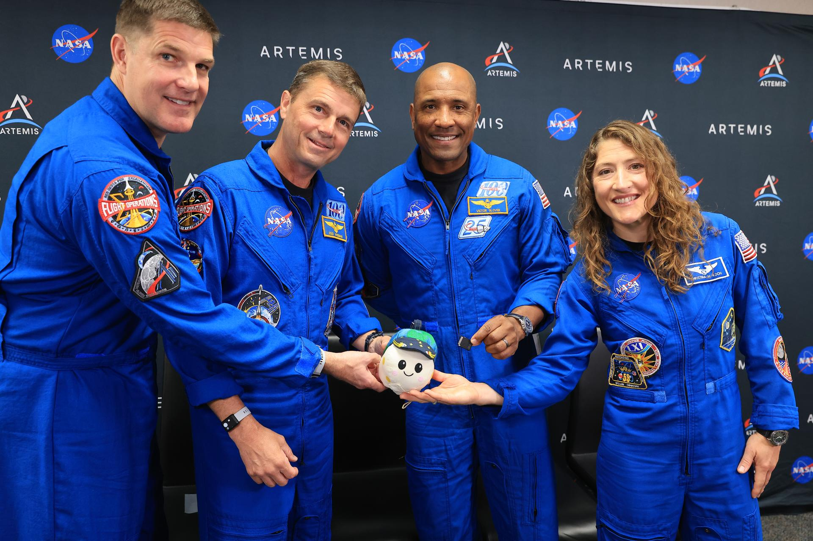
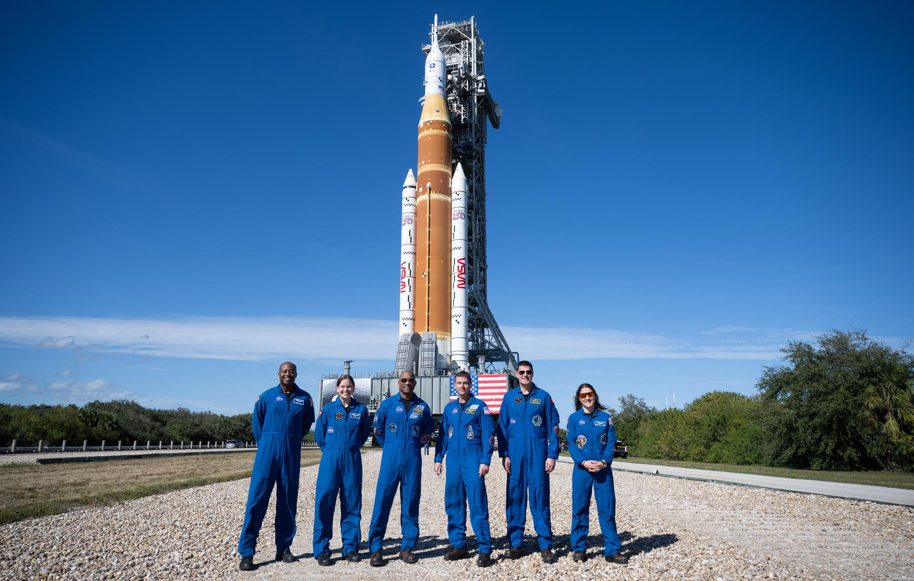

Science is cool
Science teaches about about all kinds of things. Most importantly, the greatest scientific feats and even the smallest discoveries teach us more about humanity. From babies babbling to traveling around the moon, science is cool!
Stages of Babbling
As a part of developing language, babies babble. This babbling goes through 5 main stages before babies begin to speak.
- Reflexive Vocalizations
- Cooing and Laughing
- Vocal Play
- Canonical Babbling
Canonical/reduplicated babbling
Example: dadadada
Variegated/nonreduplicated babbling
Example: dabigamu
- Jargon
3 Cool Artemis II Photos From Before the Mission
-

-

-

More images of the Artemis II astronauts are available in NASA's Artemis II Astronauts Image gallery.